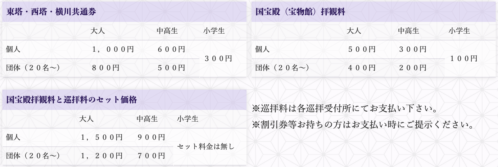
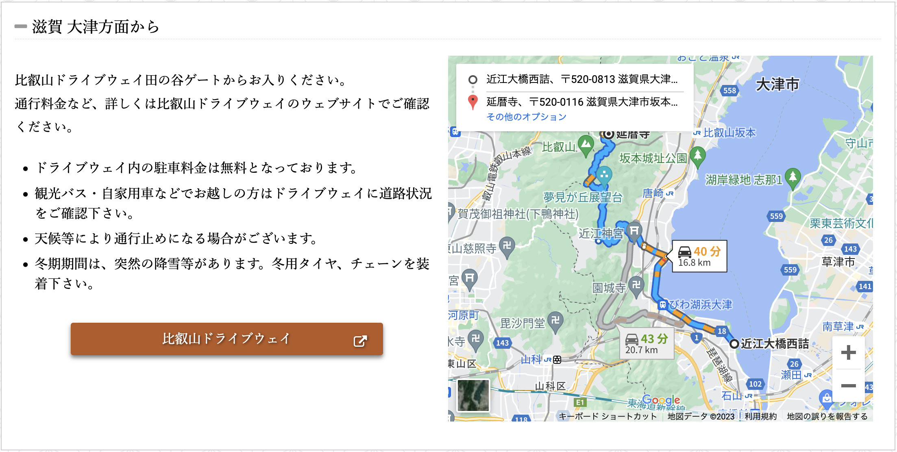
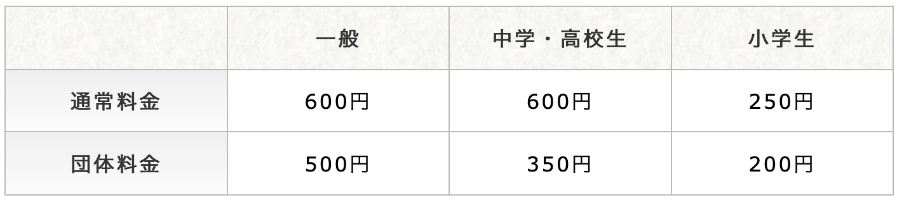

1. 延暦寺

延暦寺（えんりゃくじ）は京都市と滋賀県大津市にまたがる天台宗総本山で、標高848mの比叡山全域を境内とする寺院です。西では京都を一望し、東では日本一の大きさを誇る湖・琵琶湖を眼下に望む景勝地。この美しい自然と1200年の歴史が評価され、世界遺産として認定されました。
境内は500haと広大で、東を「東塔（とうどう）」、西を「西塔（さいとう）」、北を「横川（よかわ）」と3つに区分しています。東塔は延暦寺発祥の地であり、根本中堂を中心とする区域。延暦寺バスセンターがあり、比叡山山頂や西塔、横川地区へのシャトルバスや、京都市内行きの路線バスに乗車できます。
境内には宿坊延暦寺会館があり、要予約にて食事や宿泊、修行体験が可能。西塔は東塔から1km、横川は西塔から4kmの場所にあります。
境内全域がパワースポットと言われていますが、なかでも総本堂である「根本中堂」が最も強いと言われています。根本中堂にある「不滅の法灯（ふめつのほうとう）」は、創建から1200年経過した現在まで消えることなく燃やしつづけ、大きなエネルギーに満ちています。
| 時間 | 拝観時間 09:00～16:00 (巡拝受付は15時45分となります。) |
|---|---|
| 料金 |  |
| アクセス | 〒520-0116 滋賀県大津市坂本本町4220  |
2. びわ湖テラス

2016年7月にオープンした標高1,100mの山頂にある天空のテラスで、日本一の湖「琵琶湖」を一望する絶景が楽しめます。びわ湖テラスまでは日本一の速さを誇るロープウェイでたったの4分。ウッドデッキが張られ、ソファやテーブルを配する大人リゾートな雰囲気も素敵です。カフェも併設しており、ドリンクや軽食をいただくことができます。
| 時間 | 
|
|---|---|
| 料金 | ロープウェイ往復料金
|
| アクセス | 〒520-0514 滋賀県大津市木戸1547-1 ロープウェイ（上り便）08:30～16:00､ ロープウェイ（下り最終便）17:00､ 駐車場 （開場）7:30～ |
3. びわ湖バレイ

標高1,108mの打見山から1,174mの蓬莱山にかけて広がる高原リゾート。びわ湖テラスもこのびわ湖バレイ内のスポットです。そのほか眼下に琵琶湖を見下ろしながら楽しめるジップラインやスカイウォーカーなどのアクティビティ、手作り遊具や絶景ブランコなどが人気！
毎年5月中旬ごろには、標高1,174mの蓬莱山の斜面に、約30万球の黄色い水仙が咲きます。
| 時間 |  |
|---|---|
| 料金 |  
|
| アクセス | 〒520-0514 滋賀県大津市木戸1547-1 ロープウェイ（上り便）08:30～16:00､ ロープウェイ（下り最終便）17:00､ 駐車場 （開場）7:30～ |
4. 石山寺

紫式部が『源氏物語』の話を思いうかべた地として知られる石山寺。名前の由来にもなっている大きな硅灰石(けいかいせき)の上に立ちます。天平19年(747年)、聖武天皇の祈願により、奈良・東大寺の別当、良弁が創建。本尊は如意輪観世音菩薩で、安産や縁結び、厄除けなどに御利益があるとされ、古くから信仰を集めてきました。
四季折々の花を楽しむことができることから「花の寺」として親しまれ、5月下旬〜6月上旬にかけて、回遊式庭園「無憂園」ではおよそ200株の花菖蒲が花を咲かせます。
また2,000本のもみじが植えられており、秋には紅葉して境内が赤く染まります。例年見頃を迎える11月中旬から11月下旬頃まではライトアップも実施。「あたら夜もみじ」は日本夜景遺産にも登録されています。
石山寺はパワースポットとしても人気ですが、寺名の由来ともなっている国の天然記念物である「珪灰石（けいかいせき）」には強いパワーがあるそう。また手水舎の右手には、自然の大理石でできた「くぐり岩」があり、穴をくぐると願いが叶うと言われています。こちらもまたパワースポットとして注目を集めています。
| 時間 | 拝観時間 08:00～16:30(入山は16:00まで) |
|---|---|
| 料金 |  |
| アクセス | 〒520-0861 滋賀県大津市石山寺1丁目1-1 JR石山駅からバスで(石山寺山門前下車徒歩すぐ) |
5. 三井寺

天台寺門宗の総本山で、正式名称を「園城寺」と言います。天智・天武・持統三天皇の産湯に使われた霊泉が境内に沸くことから「三井寺」と呼ばれ、現在はこちらの名前が一般的。近江八景のひとつである「三井の晩鐘」でも有名で、また金堂をはじめとする国宝や重要文化財は100余点も所蔵します。
三井寺の総本堂である国宝の「金堂」は、豊臣秀吉の正室北政所によって再建されたもので、とても豪壮な建物です。三井寺は再生と成功のパワースポットとして知られていますが、この「金堂」あたりがパワーが強い場所。
春には1,000本以上の桜が咲き乱れ、桜の名所としても名高くライトアップが美しい。そして秋には参道が紅葉のトンネルに彩られます。
| 時間 | 拝観時間 08:00～17:00(受付終了16:30) ※再入場はできません※年中無休 |
|---|---|
| 料金 | 拝観料大人600円(30名以上550円) |
| アクセス | 〒520-0035 滋賀県大津市園城寺町246 公共交通:京阪三井寺駅→徒歩7分 車:名神高速大津ICから3km10分 |